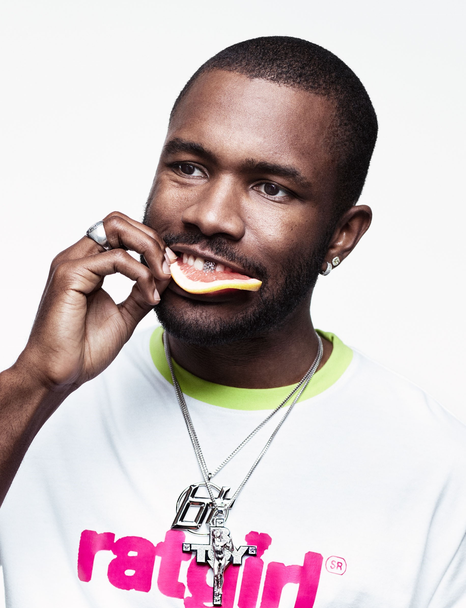
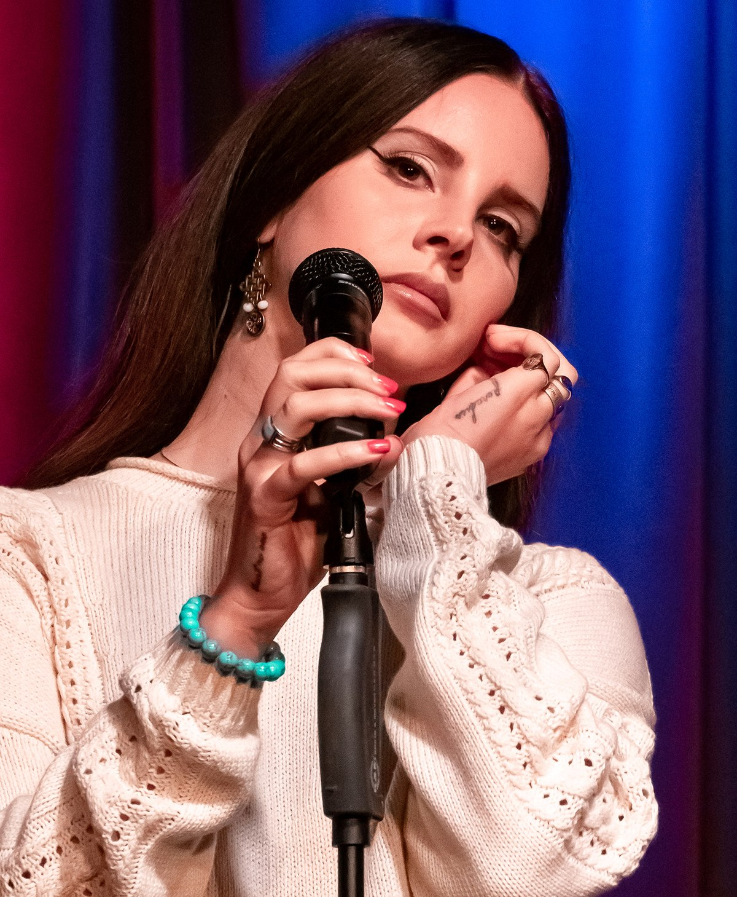
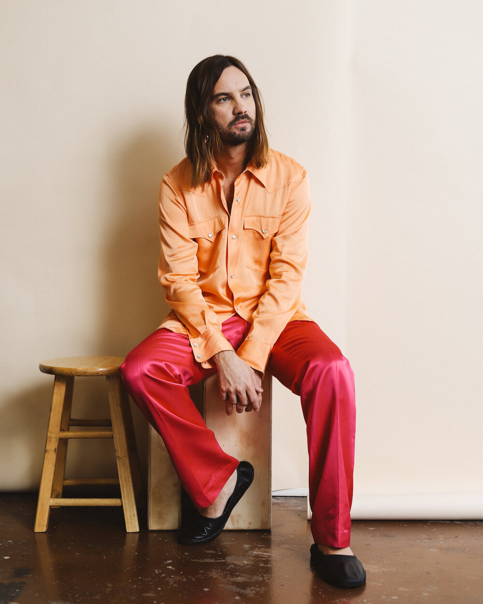

Music Library
|
Frank Ocean is an American singer, songwriter, and rapper. He has been described as one of the greatest songwriters of his generation, and is recognized for his idiosyncratic musical style and wide vocal range. Ocean's debut album Channel Orange (2012) was one of the most acclaimed albums of 2012.
Self Control (2016)
Provider (2017) Sweet Life (2012) |
 |
|
Lana Del Rey is an American singer and songwriter. Her music is noted for its cinematic quality and exploration of tragic romance, glamour, and melancholia. World fame came to her after the release of her debut single "Video Games" in 2011.
Young and Beautiful (2013)
Doin' Time (2019) Blue Jeans (2011) |
 |
|
Tame Impala is the psychedelic music project of Australian multi-instrumentalist Kevin Parker. After a series of singles and EPs, Tame Impala's debut studio album, Innerspeaker, was released in 2010; it was certified gold in Australia and well received by critics.
Disciples (2015)
Borderline (2020) Let It Happen (2015) |
 |